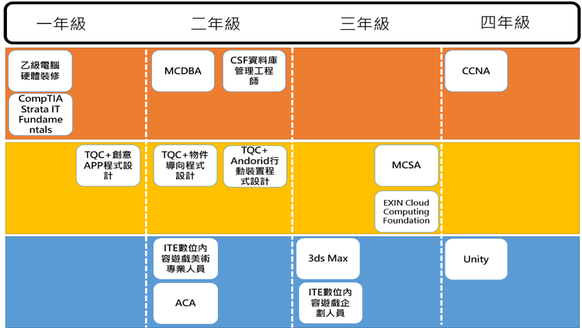
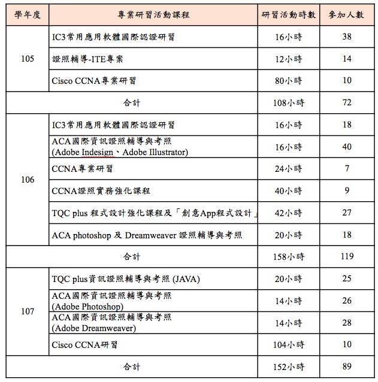

本系為了確保學生專業能力的養成，實現技職教育「一證(畢業證書)多照(專業證照)」的教育理念，依課程規劃各年級可考取之相關證照，讓學生入學時即熟悉課程與證照的配合度，思考確定自己的職涯規劃，並據以進行課程修課及考取相關證照。 本系另外也規畫各類證照考試的講座或研習課程，利用本系之專業教室，並且邀請證照相關之業界專家進行研習課程，藉此帶領學生考取相關資訊證照，提高學習興趣並獲取專業能力。

各年級可考取之證照路徑圖
專業證照研習課程
